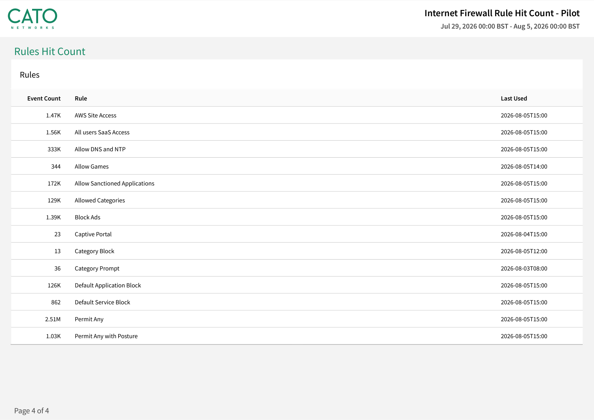

Why this matters
End-of-life and end-of-support notices are the one calendar entry no firewall estate escapes. When they land, the customer is pushed back into a cycle they already resent: forecast traffic years ahead, size and quote new boxes, fight for capex, ship and stage hardware across every site, and then own the firmware, hotfixes and emergency patches until the next EOL notice restarts the whole thing.
The timing matters. A refresh is the one moment when doing nothing is not an option — and when the customer is already questioning appliance economics, it is the natural moment to ask a better question: should this refresh be the last one? The objective is to replace the hardware lifecycle with a cloud service that is always current, always sized, and always patched.
The refresh treadmill
Every appliance refresh carries the same three taxes, whatever the vendor on the bezel:
The sizing gamble
Boxes are sized today against a multi-year guess at future traffic. Guess low and the estate chokes; guess high and the budget is burnt on idle capacity. Turning on TLS inspection later can push a correctly-sized appliance off a performance cliff — so it quietly stays off.
The capex & rollout tax
Quotes, budget approval, procurement, shipping, staging, site-by-site cutovers, project management. A multi-site refresh is a programme measured in months — and it delivers the same security posture the customer already had, on newer tin.
The lifecycle drag
Firmware upgrades, hotfixes, vendor security advisories against the firewall itself, change windows per site, and rising support-renewal costs as hardware ages — until the next EOL notice arrives and the cycle restarts.
“Which firewall models hit end-of-support next, and when? What does the annual support renewal cost across the estate? And how long did your last firewall policy change take to roll out to every site?”
The appliance-refresh decision tree
A refresh forces a decision anyway — so put both paths on the table. Like-for-like keeps the familiar operating model but re-commits to every cost above for another cycle. Consolidating into FWaaS treats the refresh as the exit ramp.
| At refresh time, ask… | Like-for-like appliance refresh | Consolidate to Cato FWaaS |
|---|---|---|
| How do we size it? | Re-size every box against a multi-year traffic guess | No sizing — capacity scales in the Cato cloud |
| How do we pay for it? | Capex spike plus rising annual support renewals | Predictable per-site / per-user subscription |
| How do we roll it out? | Ship, stage and cut over hardware at every site | Migrate policy once; sockets terminate the last mile |
| Who patches it? | Your team owns firmware, hotfixes and change windows | Cato operates and patches the enforcement stack |
| How do new capabilities arrive? | New hardware generations or licence SKUs | As software, continuously, in the platform |
| Can we inspect TLS everywhere? | Performance cliffs force over-sizing or switch-off | Inspected at scale in the PoP — a policy decision |
| When is the next refresh? | The cycle restarts at the next EOL notice | There is no next refresh |
The wider economics — appliance spend, licences, people time across the whole point-product stack — are developed in Vendor Consolidation & Network TCO; use that page to build the TCO story once this one lands the architectural argument.
Where this sits in the Cato SASE platform
- Sockets at every site terminate the last mile; the EOL firewall estate is retired, not refreshed.
- All enforcement runs in the PoP single-pass engine: FWaaS, IPS, anti-malware and TLS inspection.
- One global rule base replaces per-box configs; a change in CMA reaches every PoP in seconds.
- IPS virtual patching shields the unpatched app server in the DC while ops patch on their own timetable.
Enforcement moves to the PoP — for good
With Cato, the firewall stops being a device and becomes a service. Sockets at each site terminate the last mile — zero-touch edges with no security hardware to size or patch. All enforcement (internet firewall, WAN firewall, IPS, anti-malware, TLS inspection) runs in the Cato PoP's single-pass engine, where compute is elastic and the software is maintained by Cato. One global rule base replaces the per-box configurations, and a policy change made in the Cato Management Application propagates to every PoP in seconds.
No sizing exercise, ever
Capacity scales in the Cato cloud. TLS inspection runs at scale in the PoP — enabling it is a policy decision, not a hardware upgrade.
No patch windows, no EOL
Cato operates and patches the enforcement software. There is no firmware to schedule, no PSIRT advisory against your firewall, and no end-of-support date on a cloud service.
New capabilities arrive as software
IPS, anti-malware, CASB, DLP and whatever ships next are delivered into the same single-pass engine — no forklift, no new SKU on the branch shelf.
One policy, everywhere
A single global rule base replaces dozens of per-box configurations. Change a rule once and every site, user and cloud instance is enforcing it in seconds.
Virtual patching: shielding what you can't patch yet
A refresh conversation is also a patching conversation. Cato Security Research writes and deploys IPS protections for newly disclosed CVEs directly into the single-pass engine — no customer change window, no appliance signature update to schedule. Assets behind Cato are shielded while the ops team patches on its own timetable.

How to run the demo
Get the specifics first: which models are going end-of-support and when, what the support renewal quote looks like, and how painful the last estate-wide change was. Then demo the alternative against exactly those pain points.
-
Open the rule base they'll inherit
Security → Internet Firewall
Walk the single ordered rule set: allow/block by identity, group, application and category — enforced identically for London DC, Glasgow, Madrid Office and every remote user. Make the point explicitly: this is the whole estate's internet policy, and there is no box behind it.
-
Show WAN segmentation without a datacentre firewall
Security → WAN Firewall
Show east-west rules between sites, VLANs and user groups — the segmentation work their DC firewall pair does today, done in the cloud with the same rule grammar as the internet policy.
-
Turn TLS inspection into a policy decision
Security → TLS Inspection
Open the TLS Inspection policy and show the enable toggle and scoping rules (inspect by site, user group, category; bypass sensitive categories). Contrast with the appliance world, where this switch is the one that halves throughput and triggers a re-sizing exercise.
-
Show IPS protections and virtual patching
Security → IPS
Show the IPS policy and the protections maintained by Cato Security Research. Tie it to the Rapid CVE Mitigation story above: new critical CVEs are virtually patched in the PoP without a customer change window — their unpatched assets are shielded from day zero of Cato's protection, not from their next maintenance weekend.
-
Prove it: change once, live everywhere in seconds
Monitor → Events
Make a small rule change — block a risky app category — and save. Then filter Events to show the new rule enforcing across sites in different regions within seconds. Ask them to compare that with the rollout time of their last estate-wide firewall change.
-
Close on the economics
End where the conversation started: the refresh quote. Like-for-like buys the same posture on newer tin, with the next EOL date already ticking. FWaaS removes the sizing, the rollout and the lifecycle entirely — then bridge to the vendor-consolidation TCO story to widen the case beyond firewalls.
How to prove it in the customer's tenant
The renewal-decision pilot is deliberately small: one branch, one parallel socket, the appliance estate untouched — whatever the vendor on the bezel. The only appliance-side change in the whole engagement is a single route on the transit VLAN, which is also what makes rollback a routing change rather than a project. Everything else happens in the customer's Cato tenant: a bounded, hit-count-rationalised slice of the rulebase translated monitor-first, the appliance's inter-VLAN job demonstrated on the LAN Firewall where the estate needs it, threat prevention evidenced on real traffic, and every artefact filed into a renewal-decision evidence pack that states plainly what the appliance does today and what FWaaS demonstrated. Agree the success criteria before configuring anything, per Running a Cato PoV — and book the decision meeting at the same workshop. If the bezel says Palo Alto or Check Point, run the vendor-specific displacement PoV on Palo Alto Displacement or Check Point Displacement instead; the phased path this pilot feeds is animated on the firewall-refresh journey page.
| # | Success criterion | Evidence artefact | Where it lives |
|---|---|---|---|
| 1 | Co-existence holds — the socket carries the pilot subnet in parallel while the appliance remains default gateway, with no user-visible disruption | Dated day-one screenshots: tunnels up, transit-VLAN handoff routes exchanged, first traffic flowing | Monitor → Topology Network → Sites |
| 2 | Policy parity on a hit-count-rationalised slice — the 15–20 highest-hit rules translated and firing with the same intent (same flows allowed and blocked) | Per-rule events plus the Home → Reports rule hit count PDF, read against the appliance's own rule-usage baseline from week zero | Monitor → Events Security → Internet Firewall |
| 3 | East-west enforced without the appliance — the branch's inter-VLAN control demonstrated as LAN Firewall rules enforced locally on the Socket | LAN Firewall events (generated on the Socket) showing the rule matching per VLAN; the global rulebase scoped to the pilot site | Security → LAN Firewall Monitor → Events |
| 4 | Threat-prevention verdicts demonstrated — IPS and Anti-Malware run monitor-first on pilot traffic, then block, with a harmless test detection stopped and attributed | Threat events attributed to user, device and site; block-page screenshot after the flip | Monitor → Threats Dashboard |
| 5 | The renewal-decision pack assembled — what the appliance enforces today beside what FWaaS demonstrated, gaps conceded in writing, every claim dated | The two-column comparison plus the artefacts behind criteria 1–4, exported weekly | Home → Reports Administration → Audit Trail |
| 6 | Rollback shown to be a routing change — withdraw the handoff route in a change window and traffic reverts to the appliance, timed and evidenced | Before/after Topology views with timestamps; the reversion window measured in minutes | Monitor → Topology Administration → Audit Trail |
- Trial licences confirmed for every capability under test — IPS, Anti-Malware/NG Anti-Malware and TLS inspection — live for the whole PoV window.
- TLS inspection staged first where content-level verdicts matter (Anti-Malware file verdicts, full-path URL matching) — follow the phased approach in TLS Inspection: Staged Rollout Playbook, with the Cato root certificate deployed to pilot devices only.
- Identity in place — pilot users exist as a SCIM/LDAP-provisioned group in CMA and are syncing before any user-scoped rule is written.
- The appliance baseline — a read-only export of the pilot branch's rulebase with hit counts (every mainstream NGFW exposes rule usage under some name), plus the list of inspection features actually enabled today. This is the yardstick criteria 2 and 5 are measured against, and the only thing the PoV ever asks of the appliance besides the handoff route.
- Socket version — if the east-west story needs device-attribute criteria (camera VLANs, OT gear), confirm the pilot Socket runs v26 or higher — and that device criteria are enabled for the account (the KB directs accounts to Cato to switch this on) — before writing that step into the plan.
- Scope — one branch socket (shipped and staged), a transit VLAN agreed with the network team, and change windows for the handoff route and the rollback drill.
-
Week zero — baseline the appliance before touching anything
Export the pilot branch's rulebase with hit counts and rationalise on them first: the representative slice is the 15–20 highest-hit rules, deliberately including one identity-scoped rule and one app- or category-based rule. Dead rules stay dead — zero-hit rules are out of PoV scope by design. In the same pass, record what the appliance actually does today: which inspection features are licensed, which are enabled, and — the usual honesty moment — whether TLS decryption is really on. That inventory becomes the left-hand column of the renewal-decision pack.
-
Stand up the parallel socket at the pilot branch
Network → Sites
Create the site, connect the socket on the transit VLAN and let it tunnel out through the existing internet path — the appliance remains L3 default gateway and nothing changes for users. Confirm in Monitor → Topology that the site is up against its nearest PoP, and take the dated day-one screenshots: evidence item zero for criterion 1.
-
Configure the handoff — statics or eBGP
Network → Sites → Site Settings → BGP
Either point statics for the pilot subnet at the socket from the L3 switch or appliance, or bring up an eBGP neighbour: set the peer and Cato ASNs in ASN Settings, the peer IP, and advertise Summary routes towards the appliance with the Metric set so it still prefers its own default; verify with Show BGP Status (Configuring BGP Neighbors for a Cato Socket). Either way, the pilot subnet now reaches Cato per prefix — and the rollback lever for criterion 6 already exists.
-
Translate the policy slice — monitor-first, at parity
Security → Internet Firewall Security → WAN Firewall
Rebuild the slice at parity: egress intent into the Internet Firewall, site-to-site intent into the WAN Firewall allowlist, identity scopes from the synced pilot group. Every translated rule gets Event tracking, and nothing blocks that the appliance did not already block — the PoV proves the same intent enforced, not a new posture. Expect rule names never to line up between vendors; parity is judged on flow outcomes, which is what the troubleshooting grid below is for.
-
Show the east-west story — LAN Firewall where the estate needs it
Security → LAN Firewall
The branch appliance's other job is inter-VLAN filtering, and that work does not go to the PoP: the LAN Firewall is a global policy whose rules are scoped per site (or site group) and VLAN, and enforced locally on the Socket — events are generated on the Socket itself (Socket LAN Firewall policy). Write one representative rule for the pilot site — guest VLAN to corporate VLAN blocked, say, or a device-attribute rule for a camera VLAN (criteria need Socket v26+, and device-attribute rules only match devices the Device Inventory engine has detected, and are enforced only where the device's MAC address was seen — the Cato DHCP service helps ensure that). Enable the site's Layer 7 capabilities before using app-layer objects, and remember the scope boundary: intra-site traffic that matches no LAN Firewall rule is treated as WAN traffic, even when it hairpins via the PoP.
-
Threat prevention — monitor, then block, on the pilot scope
Security → IPS Security → Anti-Malware
Enable IPS in Monitor — verdicts generate events while traffic continues to its destination (Configuring the IPS Policy) — and Anti-Malware with NG Anti-Malware on top of it (it requires the base engine enabled; Configuring the Anti-Malware Policy). Review a week of verdicts with the customer, then flip the pilot scope to block and demonstrate a harmless test detection stopped, block page shown, event attributed to user, device and site — criterion 4 evidenced in one screen, and the monitor→block discipline itself is part of the story: this is how the estate-wide rollout would be governed too.
-
Assemble the renewal-decision pack — and run the rollback drill
Home → Reports Monitor → Events
Generate the rule hit count report as the dated PDF artefact — it covers the Internet Firewall, WAN Firewall and Network Rules policies (rule hit count reports); LAN Firewall parity is evidenced from its Socket-generated events instead. Set the counts against the week-zero appliance baseline, then build the two-column comparison: what the appliance enforces today (from the week-zero inventory) beside what FWaaS demonstrated, with gaps conceded honestly on both sides — features the appliance runs that the PoV did not test, and things Cato showed that the appliance has switched off. Close criterion 6 in a change window: withdraw the handoff route, watch traffic revert to the appliance, time it, screenshot it, restore it. A rollback that has been rehearsed and measured is the strongest slide in the wrap-up deck.
What good output looks like



Troubleshooting the PoV
Asymmetric routing through the appliance
Pilot-subnet sessions stall or reset: traffic egressed via Cato but returned via the stateful appliance, which drops the unseen flow. Check the appliance's session log for out-of-state drops to the pilot subnet; fix by advertising the pilot prefix consistently in both directions and never splitting a flow's egress and return between the two edges.
Rule names never line up — compare fairly
The same flow can be a generic web rule on the appliance and a named catalogue app on Cato, so a name-by-name comparison always "fails". Judge parity on flow outcomes — source, user, destination, allow/block — and re-create any custom app objects as Cato custom apps placed above broader catalogue entries, or their traffic silently matches a wider category.
Double TLS inspection
Pinned apps failing, certificate warnings doubling up: the appliance's decryption is still active on a path Cato now also inspects. Disable appliance decryption for Cato-routed pilot traffic, keep the TLSi wizard's bypass rules ahead of every inspect rule, and block QUIC so browsers cannot sidestep the inspected path.
The LAN Firewall rule never matches
Three usual causes: the pilot Socket is below v26, the version from which rule criteria are supported; the device was never detected by the Device Inventory engine or its MAC address was never seen (attribute rules are enforced only for MAC-detected devices — Cato DHCP is the best practice); or app-layer objects are in the rule without the site's Layer 7 capabilities enabled. Check all three before debugging the rule itself — and remember unmatched intra-site traffic is handled as WAN traffic, not dropped.
Identity-scoped rules that never match
A translated user-scoped rule shows zero events: the SCIM/LDAP group is empty or stale in CMA, so the rule cannot match. Check the group's membership under Access → Users before touching the rule — identity provisioning lag, not translation, is the usual culprit.
New detections read as regressions
Events appear on Cato with no ancestor in the appliance's logs: usually traffic the appliance never decrypted or never inspected, now seen for the first time under staged TLSi. Triage each against the week-zero feature inventory — if the appliance had the capability off, it is a finding for the renewal pack, not a parity failure.
Gotchas & exit
- The refresh-vs-exit decision is commercial, and the PoV never makes it — it informs it. Renewal quotes, EOL dates and the wider TCO case belong to Vendor Consolidation & Network TCO; the pack's job is to make that meeting an evidence review, not a demo.
- Each capability under test needs its trial licence live for the whole PoV window — a licence lapsing mid-pilot reads as a product failure.
- The rule hit count report covers the Internet Firewall, WAN Firewall and Network Rules policies — LAN Firewall evidence comes from its Socket-generated events, so file both artefact types in the pack.
- TLS inspection is bypassed for embedded and unsupported operating systems — keep such devices out of the pilot scope or write the criterion around them.
- Export the evidence pack weekly, not at the end — screenshots and event exports dated as they land, so the wrap-up reads a register rather than excavating history.
Exit has two doors, both clean. If the criteria pass, nothing is thrown away: the pilot branch, handoff and translated slice become wave one of the phased retirement journey, and the parked asks become the rollout scope. If the customer renews the appliances instead, they renew with better information than any refresh cycle before — and the unwind is the rollback drill run once more without the restore: withdraw the handoff route, disable the pilot policies, and export the evidence pack and Administration → Audit Trail before trial licences lapse. The appliance estate ends the engagement exactly as it started — one route removed, nothing else ever changed.